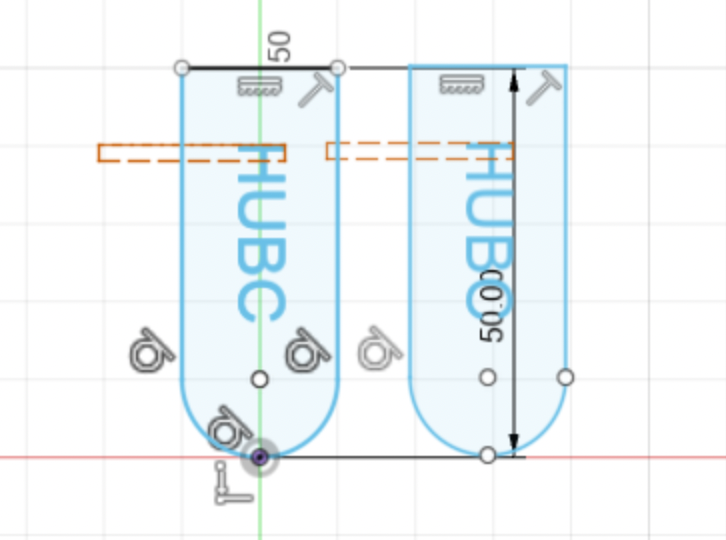

Kinetic Sculture
I have been rowing since I was a freshman in high school and this week I wanted to pay homage to that part of my life. The idea was to build a boat atop waves with oars that spin
and clip the top of the waves, with speed controlled by a potentiometer and arduino. I started off spending a while sketching and trying to decide on
the design of the boat, which was more difficult than I thought. It took a few tries and tests on the laser cutter to get the shape
right. Namely, traditional rowing shells are very much so curved, which would have been dificult to do with laser cut parts. I considered just making a boat shell
out of a series of trusses but there was extremely limited material available in the lab so that ended up not being feasible.

I decided instead to use the japanese long boat as inspiration and design two long trapezoidal sections. This is also more in line with what rowing shells look like, and allowed me to make a great boat-looking piece out of limitef material. I sketched the designs for the boat and the oars in Fusion360 and then printed them out of acrylic. One of the huge time-syncs of this project was having to rotate and moved around the pieces repeatedly to squeeze them in to tiny pieces of uncut acrylic from huge boars of acrylic with lots of holes in them. 
Then it came to making the movement mechanism. I had two ideas. One was to use a crank-shaft to spin the oars in a circular motion outsdie of the boat and hte second was to simply put the oars on a spinning platform. I first tried to do the first once, using stiff wire to make the crank crank-shaft and mounting the motor into a piece of acrylic by crilling a hole for the shaft and attaching a wheel on the other side of the motor. I also drilled a small hole in the acrylic to fit a pin through the sheet into one of the tiny holes in the motor's gear bo to keep it from spinning around.When it came to making the crankshaft actually turned I first started trying to use just the wheels given as they already interface directly with the motor I had access to. However after about two hours of trial and error, it seemed as though the grip between the wheels was just not enough to move the oars I had built and the gears kept slipping. I then tried replacing them with acrylic gears that I laser cut. I wanted to design them myself to get more practice with fusion but this ended up being a mistake as it took way to long to figure out. I ended up again using the circular pattern tool to duplicate a patter all around a circle to mistake the gears. Next time I will just use a plug in!
Unfortunately, I still couldnt get this to work. The gears would just not stay paralel I think because the cracnk shaft was not completely straight. I couldn't get it completely straight since the wire came wound up and also it was tough to get the wheel exactly perpendicular and the spacing in the acrylic mouting board exactly right. The mechanism was working before I had built the boat but afterwards I guess something got bent or moved because it just would not work no matter what I tried. After a few hours of trial and error and trouble shooting I pivoted to just having the oars spin and brush over the waves I had mounted to the side of the boat. I measured the voltage across my motor circuit and saw it was drawing about 5 volts and 0.04 amps. I verified this by measuring the resistance of the motor (with the oars) and got it to be about 120 Ohms which checks out with V=IR!